|
Ritorna all'indice delle parrocchie
Il numero abbinato ad ogni famiglia indica la relativa posizione nello Stato delle Anime
1 - Prete Giuseppe Pinchiurli - Pievano di questa Pieve
2 - Ciabattini Gaetano - mugnaio
3 - Goretti Francesco - attende al podere
4 - Bertini Girolama - va a opera sopra terreni
5 - Fodari Giuseppe - va a opera sopra terreni ed accattare - 3
6 - Monti Giovanni Battista - va a opera sopra terreni
7 - Franci Agostino - mezzaiolo di podere
8 - Ticci Giovanni Battsita - padrone di osteria - 8
9 - Cinci Pasquino - va a opera sopra terreni
10 - Monti Francesco - va a accattare - 2
11 - Bacciarini Ansano - va a lavorare le terre e accattare - 4
12 - Bernardini Antonio - va a opera sopra terreni - 2
13 - Pesucci Gregorio - va a opera sopra terreni - 2
14 - Fantacci Bernardino - mezzaiolo di podere
15 - Valentini Giuseppe - mezzaiolo di podere
16 - Piaggi Arcangiolo - mezzaiolo di podere
17 - Purelli Francesco - mezzaiolo di podere
18 - Giorgi Antonio - mezzaiolo di podere
19 - Bernardini Francesco - mezzaiolo di podere
20 - Dei Cecilia - vedova - va a accattare - 2
21 - Donati Bernardino - mezzaiolo di podere - 4
22 - Bondi Giacomo - mezzaiolo di podere - 6
23 - Pepi Giacomo - mezzaiolo di podere
24 - Merci Ansano - proprietario mezzaiolo di altrui podere
25 - Bianchini Giuseppe - lavoratore di terreni
26 - Branconi Giacomo - mezzaiolo di podere
27 - Centini Lorenzo - mezzaiolo di podere - 12
28 - Valacchi Giovanni - va a opera sopra terreni - 4
29 - Capaccioni Bernardino - va a opera sopra terreni
30 - Gabbricci Maria - moglie di Giuseppe - filatora di lini - 4
31 - Goretti Antonio- va a opera sopra terreni e accatta - 2
32 - Gabbricci Rosa - moglie di Bernardino - filatora di lini e va a accattare - 2
33 - Fei Diamente (sic) - vedova - filandaia di lini e va a opera
34 - Pesucci Tomaso - bottaio e palaiolo mezzaiolo di podere - 12
35 - Bogi Giuseppe - va a opera sopra terreni
36 - Mutassi Giovanni Antonio - mezzaiolo di podere
37 - Rossi Domenico - va a opera sopra terreni
38 - Rossi Matteo - mezzaiolo di podere
39 - Mattanini Marco - mezzaiolo di podere - 15
40 - Ancilli Alessandro - mezzaiolo di podere
41 - Simoncini Orsola - vedova - filandaia di lini e va a accattare - 1
42 - Corti Umiltà - vedova - filandaia di lini - 2
43 - Naldini Agata - vedova - va a accattare - 1
44 - Rosi Arcangiolo - va a opera sopra terreni
45 - Bianciardi Elisabetta - va a accattare - 2
46 - Valenti Maddalena - vedova - va a accattare - 3
47 - Fucecchi Santo - va a accattare - 1
48 - Vieri Giovanni - va a opera sopra terreni
49 - Pallini Santi - mezzaiolo di podere
50 - Marchetti Domenico - va a opera a diversi lavori - 3
51 - Marchetti Anna - vedova - va a accattare
52 - Bartolini Orsola - vedova - va a opera sopra terreni e va a accattare - 2
53 - Broli Marta - va a accattare - 2
53 - Cappanni Giovanni - mezzaiolo di podere - 11
54 - Salvini Antonio - pigionale va a opera sopra terreni
55 - Rossi Francesco - pigionale va a opera sopra terreni
56 - Vagheggini Giovanni Maria - mezzaiolo di podere
57 - Pavolini Francesco - mezzaiolo di podere
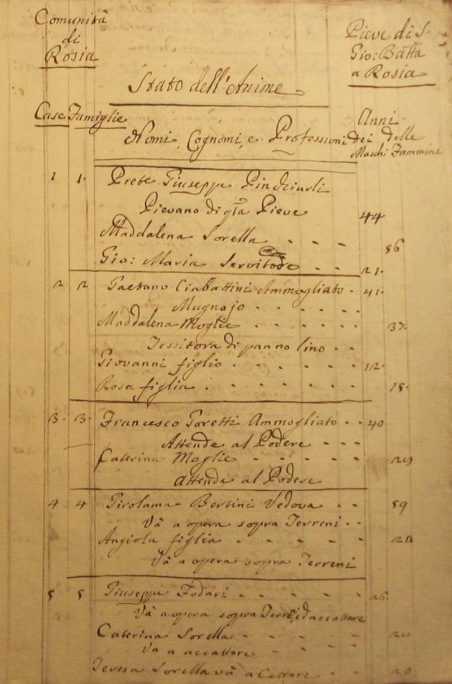
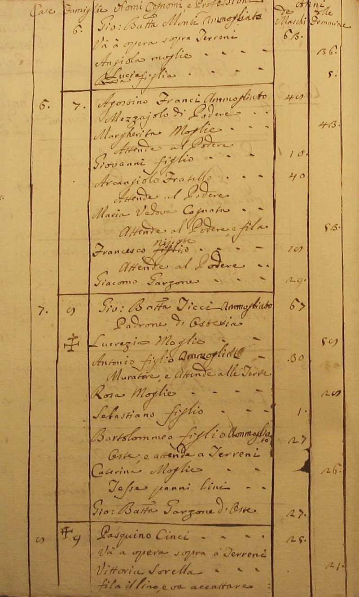
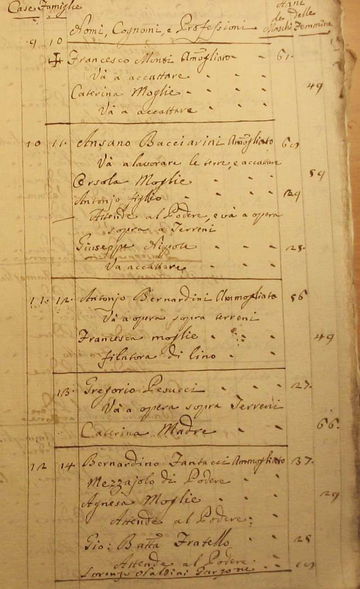
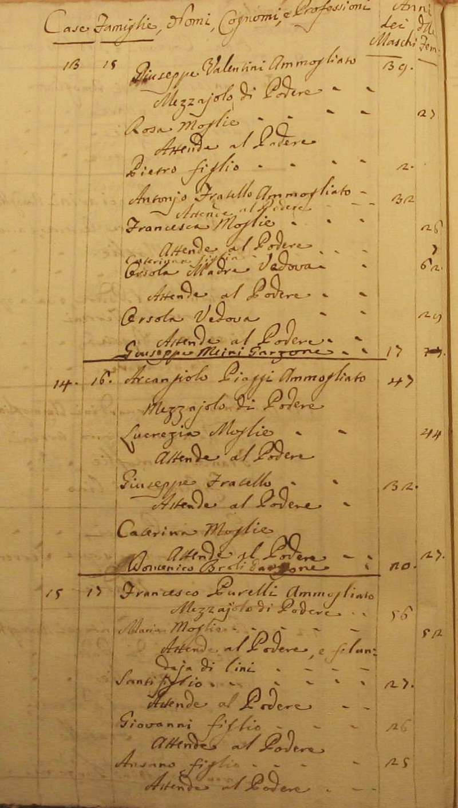
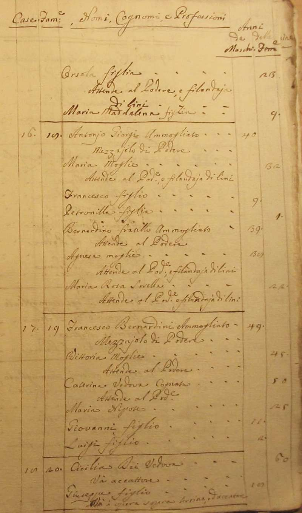
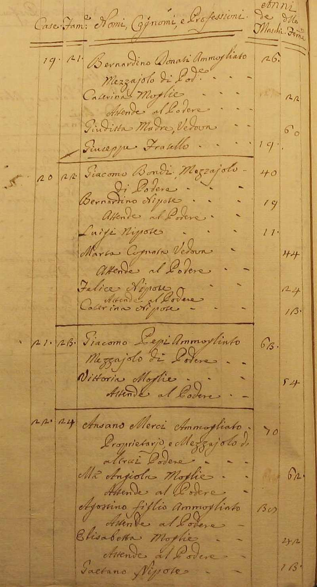
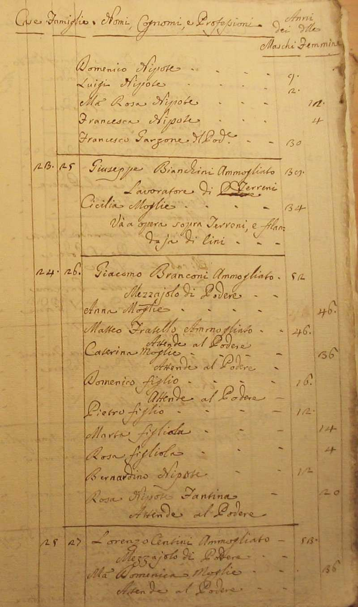
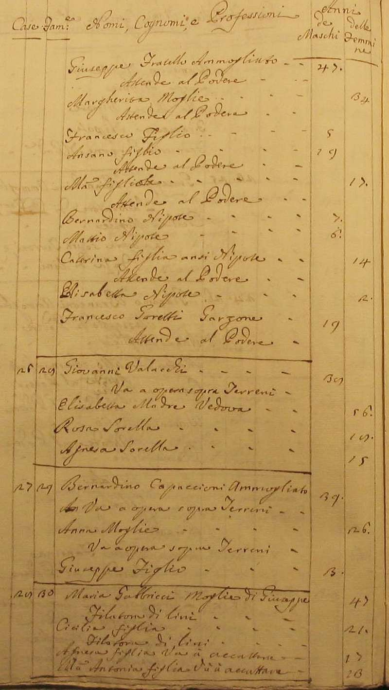
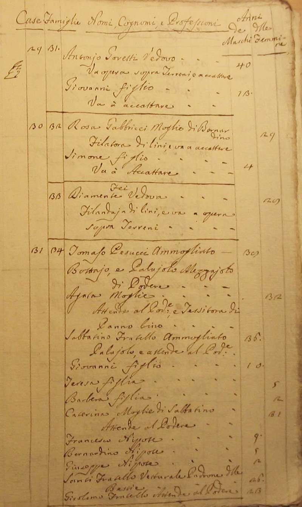
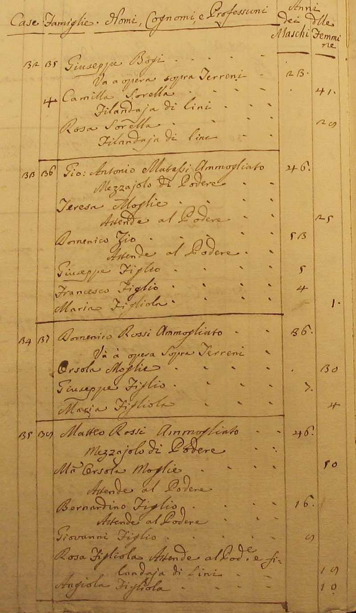
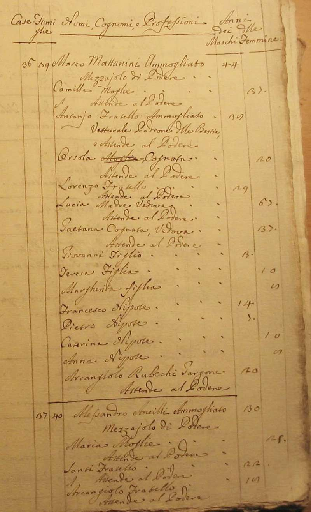
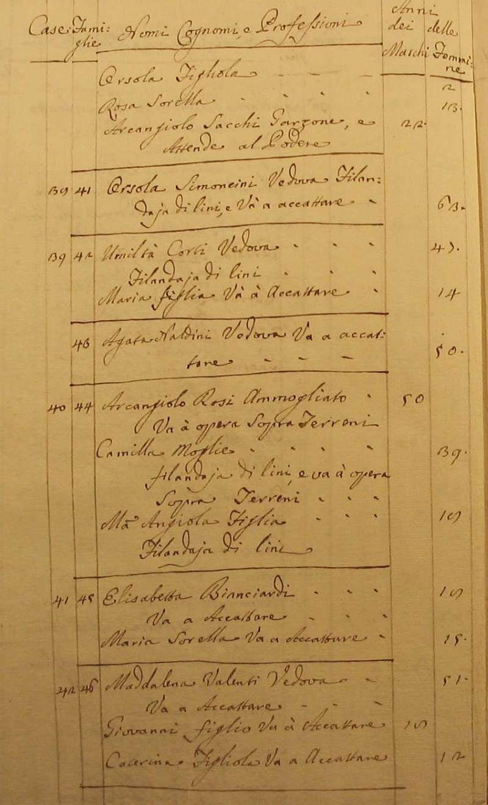
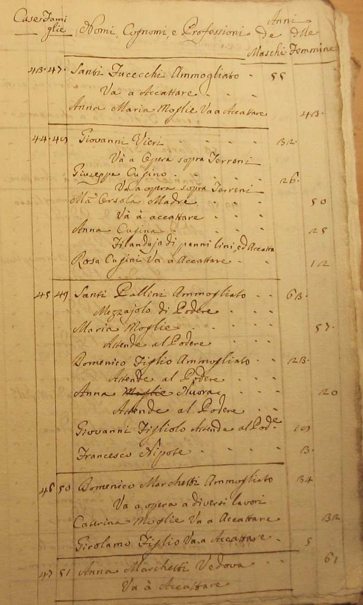
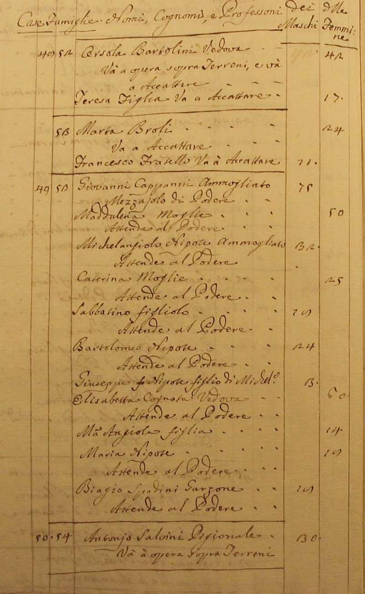
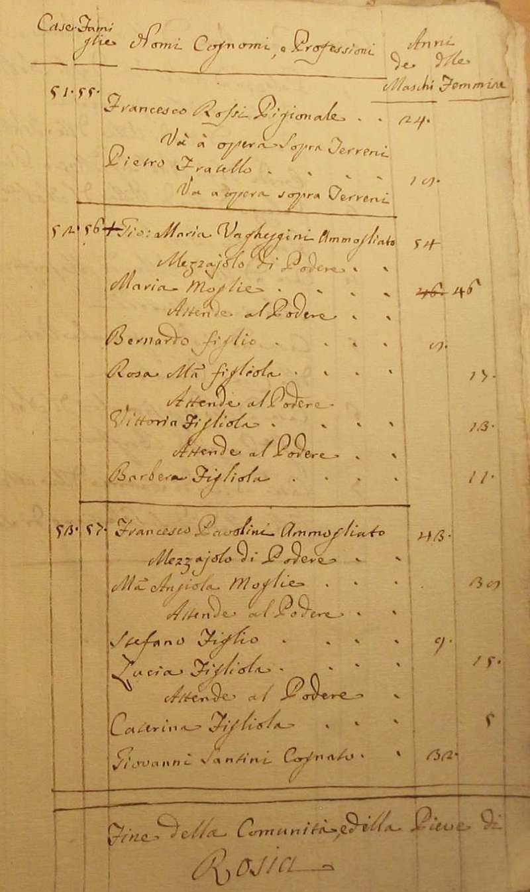
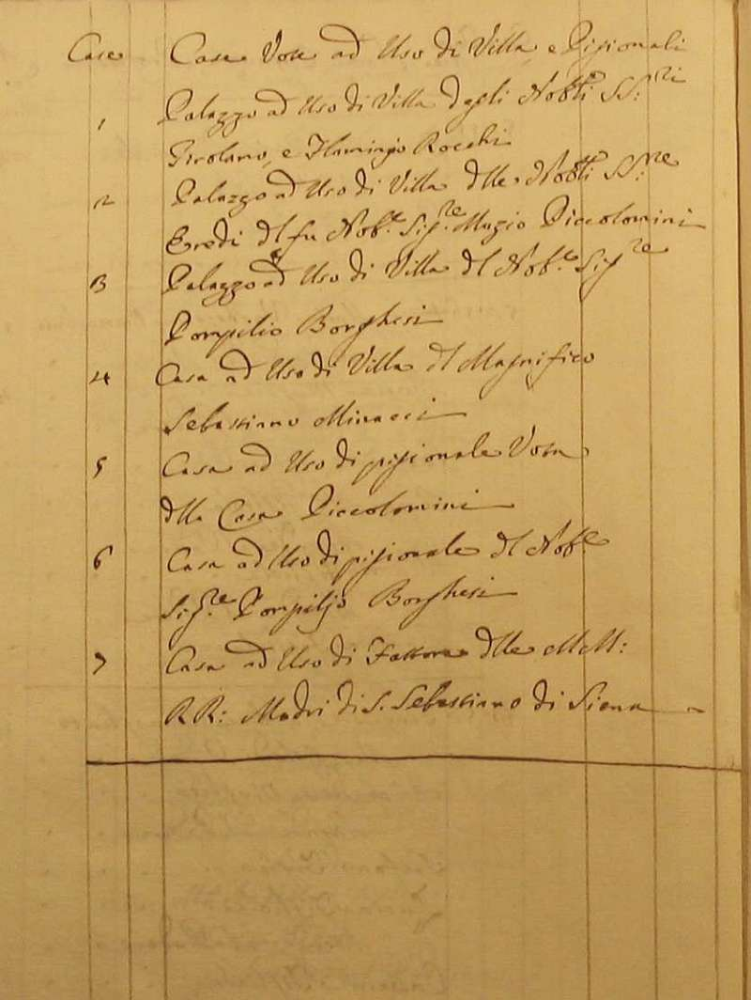
Torna ad inizio pagina
Ritorna all'indice delle parrocchie
| |

|